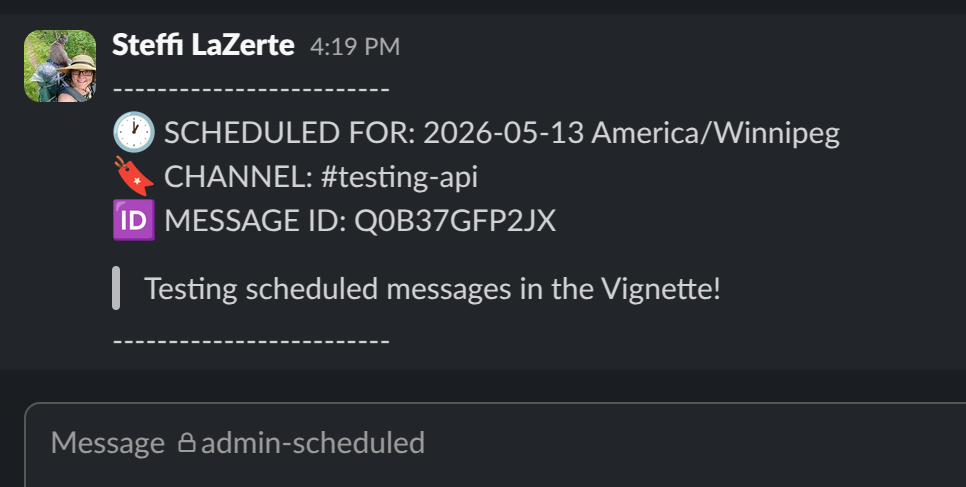

Using the Slack API to schedule messages. First make sure you are authorized to work with the Slack API:
keys_check()
#> Key status
#> ✔ slack: TRUE
#> ✔ matomo: TRUE
#> ✔ linkedin: TRUE
#> ✔ linkedin_org: TRUE
#> ✔ github: TRUE
#> → Good to go!If not, see the Setting Up Slack article.
Once you have set up your Slack access, you can use the Slack API to access the rOpenSci Slack space using httr2 directly or via the promoutils helper functions.
Posting messages immediately
By default all messages are posted in the #testing-api
channel which is great for playing and testing, but when you’re ready to
post for real you can change this with the channel
argument.
slack_posts_write("Testing immediately posting in the Vignette!")
#> Slack message posted successfully to #testing-apiWe can get a list of messages in this channel:
slack_messages("testing-api")
#> # A tibble: 2 × 5
#> channel ts time user text
#> <chr> <chr> <dttm> <chr> <chr>
#> 1 testing-api 1778789426.839439 2026-05-14 15:10:26 UNRAUCMTK Testing immediately posting in th…
#> 2 testing-api 1747073987.605889 2025-05-12 13:19:47 UNRAUCMTK <@UNRAUCMTK> has joined the chann…And we can clean this up with:
m <- slack_messages("testing-api") |>
slack_message_rm()
#> Only removing the most recent message
#> Message 1778789426.839439 successfully removed from C08RY1PUHM3Check that it’s gone
slack_messages("testing-api")
#> # A tibble: 1 × 5
#> channel ts time user text
#> <chr> <chr> <dttm> <chr> <chr>
#> 1 testing-api 1747073987.605889 2025-05-12 13:19:47 UNRAUCMTK <@UNRAUCMTK> has joined the chann…Scheduling messages
Let’s schedule a message for tomorrow.
slack_posts_write(
"Testing scheduled messages in the Vignette!",
when = Sys.Date() + lubridate::days(1)
)
#> Slack message scheduled successfully to #testing-api
#> Scheduled message successfully added to #admin-scheduled- If
when = "now",slack_posts_write()will post immediately (default) - If scheduled,
slack_posts_write()will also post a copy of the message and it’s date to scheduled in the private channel,#admin-scheduled, for quick checking of currently scheduled messages when you’re in the Slack app.

See the currently scheduled messages according to the Slack API
slack_scheduled_list()
#> # A tibble: 1 × 8
#> channel scheduled_local text date_created_dt channel_id id post_at date_created
#> <chr> <dttm> <chr> <dttm> <chr> <chr> <int> <int>
#> 1 testing-a… 2026-05-15 00:00:00 Test… 2026-05-14 20:10:27 C08RY1PUH… Q0B3… 1.78e9 1778789427To delete currently scheduled messages you need to know the
channel_id and the message id. We can get
these from slack_list_scheduled() or we can supply the data
frame directly as we did above.
m <- slack_scheduled_list()
slack_scheduled_rm(m)
#> Message Q0B3Z8LM4LR successfully removed from scheduled queue for testing-api
#> Message 1778789429.070449 successfully removed from C08T0PS0QDRNote that slack_scheduled_rm() also removes the message
posted to the #admin-scheduled channel, so that channel
should be a faithful representation of messages currently
scheduled via the API.
slack_scheduled_list()
#> # A tibble: 0 × 8
#> # ℹ 8 variables: channel <lgl>, scheduled_local <lgl>, text <lgl>, date_created_dt <lgl>,
#> # channel_id <lgl>, id <lgl>, post_at <lgl>, date_created <lgl>However, after posts have been sent, you’ll need to clean up
#admin-scheduled with a call to
slack_cleanup() which will remove any message in
#admin-scheduled that isn’t also in Slack’s internal
scheduled messages list.
slack_cleanup()
#> Nothing to clean up